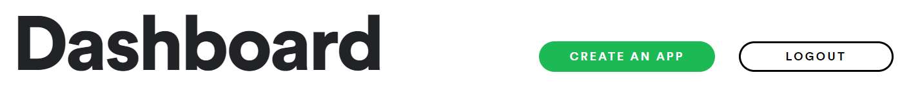

Accessing web APIs with requests
Authorization
Most APIs require users to identify themselves, and have limits on the volume and frequency of requests each user can make, in order to:
- prevent excessive or malicious use overloading the server
- ensure the API remains available for genuine users
This typically requires users to register, upon which they're provided with credentials, typically in the form of a unique id and an accompanying key or secret.
Obtaining Spotify API credentials
We'll be using the Spotify API throughout the tutorial. In order to use it, you'll need a Spotify account.
Follow CREATE AN APP from the Dashboard, then copy your Client ID and Client Secret to somewhere handy.

Authentication
In addition to the id and secret we've just gathered, Spotify requires us to authenticate prior to requesting data.
There are several options available; we'll be using the Client Credentials Flow. This will give us access to masses of data about the contents of the Spotify catalogue, but without access to personalized information such as user playlists.
We'll send the id and secretto the API using a POST request, and be sent an access_token in the response.
Obtaining an API access_token
The documentation tells us that we'll need to:
- send a
POSTrequest tohttps://accounts.spotify.com/api/token - include
'grant_type': 'client_credentials'in the request body - include
'Authorization' : 'Basic [base64 encoded client_id:client_secret]'in the header
Fortunately, the requests.post() and HTTPBasicAuth functions will simplify this for us.
repl.it code snippet
First of all, fork the repl. You'll see a file called .env.example; replace the credentials with your own, and change the filename to .env
.envfiles aren't shared when a fork of a repl is made; they allow you to store values you don't want to share
main.py will be executed when you hit Run. If all is well, you should see a dictionary printed in the console below.
Code walkthrough
Let's go through main.py and see what happened...
Accessing our credentials
import requests
from requests.auth import HTTPBasicAuth
import os
client_id = os.getenv("CLIENT_ID")
client_secret = os.getenv("CLIENT_SECRET")
- we imported the
requestsandospackages, and theHTTPBasicAuthsubmodule - we used the
.getenv()method to collect our credentials from the.envfile
Defining components for the request
We can use the Python help() function to see the docstring for requests.post():
help(requests.post)
Help on function post in module requests.api:
post(url, data=None, json=None, **kwargs)
Sends a POST request.
:param url: URL for the new :class:`Request` object.
:param data: (optional) Dictionary, list of tuples, bytes, or file-like
object to send in the body of the :class:`Request`.
:param json: (optional) json data to send in the body of the :class:`Request`.
:param \*\*kwargs: Optional arguments that ``request`` takes.
:return: :class:`Response <Response>` object
:rtype: requests.Response
url = 'https://accounts.spotify.com/api/token'
data = {'grant_type': 'client_credentials'}
auth=HTTPBasicAuth(client_id, client_secret)
- our
urlis the one given by the API documentation datais theparameter:valuepair required to be in the bodyauthis an optional keyword argument- the
HTTPBasicAuthmethod has done the required encoding and formatting of the credentials for us
Making a POST request
response = requests.post(url, data=data, auth=auth)
response.ok
-
we used the
.post()method ofrequestswith the arguments we had defined, assigning the returned object toresponse -
the
.okattribute of theResponseobject isTrue, meaning that the response was successful
Accessing response data
response.json()
{'access_token': 'BQA5XobojGmQ22qGfcf1XSX1xTJD6pH6oeltC5HtX5fML8ps_uDp1U74ybc5M45CmmRf8DX8FAFjOivOae4',
'token_type': 'Bearer',
'expires_in': 3600,
'scope': ''}
- the
.json()method of theresponseobject returned by the API converts the included JSON object into a Python dictionary - the
key:valuepairs include theaccess_tokenwe need; highlight and right-click it to copy (usual shortcuts don't work in the console) - also note the
expires_invalue - this is the time in seconds (i.e. one hour) that the token will remain usable for
Status codes
response.status_code
200
The .status_code attribute indicates whether the request was successful, and if not, what went wrong.
- in short,
200is good news, as is anything in the200s - codes in the
400s typcially indicate an issue with your code or parameters - codes in the
500s indicate something is malfunctioning on the server
JSON data structures
JSON (JavaScript Object Notation) is the most popular data format used by web APIs.
Fortunately for Python programmers, it is fairly straightforward to map JSON to equivalent Python data structures, data types and values (and as shown above, modules which can do this for us).
- JSON objects are much like Python dictionaries, with comma-separated
key:valuepairs inside{braces} - JSON arrays are much like Python lists, with an ordered collection of comma-separated values inside
[brackets]
The JSON values true, false and null are equivalent to the Python values True, False and None respectively.